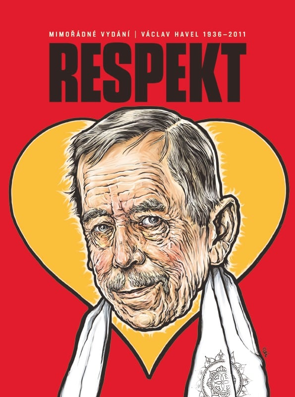

Václav Havel (1936–2011)

Až odezní smutek, přijde čas hledat inspiraci, psal šéfredaktor Respektu Erik Tabery pár dní po smrti Václava Havla ve Speciálu věnovaném našemu prvnímu polistopadovému prezidentovi. S výročím narození dramatika, disidenta a prezidenta Václava Havla přichází rekapitulace, co všechno pro nás jeho osobnost znamenala a čím vším nás inspiroval. „Havel se stal v roce 1989 představitelem hlavní role a režisérem hry, jež změnila dějiny,“ vyzdvihl britský politolog a historik Timothy Garton Ash. Články z tohoto Speciálu pro vás nyní odemykáme.
Asi nikdy nezapomenu na to dopoledne, kdy jsme jeli s Martinem M. Šimečkou v autě a pípla mi SMS, že zemřel Václav Havel. Oba nás to zasáhlo – Martin byl navíc prezidentův blízký přítel – takže jsme pak zbytek cesty více méně mlčeli. Zpráva přišla ve chvíli, kdy čerstvě vyšlo dvojčíslo Respektu, přemýšleli jsme tedy, co udělat. Nakonec jsme se rozhodli připravit speciální vydání…
Erik Tabery
- Odkaz Václava HavlaAž odezní smutek, přijde čas hledat inspiraci
- Stručný návod, jak se stát nejdůležitější osobností své zeměPřed dvěma lety zemřel prezident Václav Havel
- Pravda a láska atd. je jako slogan moc složitéNovinář, překladatel a zpěvák Plastic People Paul Wilson o dopisech, na které čekal 2 měsíce
- Režisér hry, jež změnila dějiny
- Václave Havle, bylo to skvělé!
- Společnost neví, co se mnouBěhem uplynulých dvaceti let vyšel v Respektu tucet rozhovorů s Václavem Havlem. Polovina z nich pak v době, která byla poprezidentská, a tudíž bilanční. Právě z těchto šesti interview přinášíme výběr.
- Zhaslo srdce na HraděJaké bylo prezidentství Václava Havla
- Do poslední chvíle prezidentŽivot Václava Havla v podhradí
- Cesta snůVzpomínka na první státní návštěvu prezidenta Václava Havla v USA, která vrátila Československo na mapu svobodného světa
- S Madeleine v rodiněHavlova globální přátelství a vřelé vztahy
- Usínali jsme společněAndrej Krob je režisér, který se svým Divadlem Na tahu inscenoval nejvíc Havlových her a patřil také k prezidentovým nejbližším přátelům. Oba sousedi z Hrádečku spolu trávili mnoho času i v posledních měsících.
- Vůdce odcházíKdyž T. G. Masaryk opouštěl prezidentský post, napsal o něm Ferdinand Peroutka pro svou Přítomnost článek, který ve většině argumentů pozoruhodně platí i na Václava Havla.
- Záhada jednoho faxu